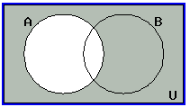
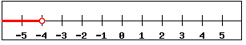

In this section, we will familiarize ourselves with set operations and notations, so that we can apply these concepts to both counting and probability problems. We begin by defining some terms.
A set is a collection of objects, and its members are called the elements of the set. We name the set by using capital letters, and enclose its members in braces \({\cdots}\). Suppose we need to list the members of the chess club. We use the following set notation: \[C=\{\text{Ken, Bob, Tran, Shanti, Eric}\}\] A set that has no members is called an empty set. The empty set is denoted by the symbol \(\emptyset\) or with empty curly braces \(\{\}\).
Two sets are equal if they have the same elements.
A set \(A\) is a subset of a set \(B\) if every member of \(A\) is also a member of \(B\). For example, suppose \(C = \{\text{Al, Bob, Chris, David, Ed}\}\) and \(A = \{\text{Bob, David}\}\). Then \(A\) is a subset of \(C\), written as \(A\subseteq C\).
Notes: Every set is a subset of itself, \(A \subseteq A\). The empty set is a subset of every set, \(\emptyset \subseteq A\).
Let \(A\) and \(B\) be two sets, then the union of \(A\) and \(B\), written as \(A\cup B\), is the set of all elements that are either in \(A\) or in \(B\), or in both \(A\) and \(B\). When you see the union symbol \(\cup\) you should think or.
| Determine \(A\cup B\) | The union is the collection of all elements from both sets: integers in \(A\) OR \(B\) (or both) |
| \(A\cup B=\{1,4,5,6,7,8 \}\) | Our Solution
Type {1,4,5,6,7,8} for \(\{1,4,5,6,7,8 \} \) in WeBWorK. Elements of sets are contained in curly braces.
|
Notice in the solution to Example 1C-1, the integer \(4\) is not written in the list of elements twice even thought it is in both sets \(A\) and \(B\). This is because there is only one integer \(4\).
Let \(A\) and \(B\) be two sets, then the intersection of \(A\) and \(B\), written as \(A\cap B\), is the set of all elements that are common to both sets \(A\) and \(B\). That is to say the set of all elements in \(A\) that are also in \(B\). When you see the intersection symbol \(\cap\) you should think and.
| Find \(A\cap B\) | The intersection is the collection of all elements common to both sets: integers in \(A\) AND \(B\) (common to both) |
| \(A\cap B=\{4,5,6 \}\) | Our Solution |
A universal set \(U\) is the set consisting of all elements under consideration. For example, if we were interested in computing probabilities of particular poker hands the universal set would be the set of all \(52\) cards in a regular deck of cards. If we were interested in GPAs of students at C of I, the universal set \(U=\{\text{GPAs of all students at C of I}\}\). Or the universal set could even be \(U=\{1,2,...,9,10 \}\), the set consisting of the first \(10\) positive integers.
Let \(A\) be any set, then the complement of set \(A\), written as \(A'\), is the set consisting of elements in the universal set \(U\) that are not in \(A\). When you see the complement symbol \('\) you should think not or outside.
| Find \(A'\) | The complement of \(A\) is the collection of all elements in \(U\) that are NOT in \(A\) |
| \(A'=\{4,5,7 \}\) | Our Solution |
| Determine \(A\cap B'\) | First identify the set \(B'\): elements in \(U\) NOT in \(B\) |
| \(B'=\{1,2,5,7 \}\) | Intersection is AND: elements in \(A\) AND \(B\) |
| \(A\cap B'=\{1,2 \}\) | Our Solution |
| Find \((A\cup B)'\) | Parentheses first: identify \((A\cup B)\)--union is OR |
| \((A\cup B)=\{0,1,2,3,4,6 \}\) | Next consider the complement--OUTSIDE this set |
| \((A\cup B)'=\{5,7 \}\) | Our Solution |
We now use Venn diagrams to illustrate the relations between sets. In the late 1800s, an English logician named John Venn developed a method to represent relationships between sets. He represented these relationships using diagrams, which are now known as Venn diagrams. A Venn diagram represents a set as the interior of a circle. Often two or more circles are enclosed in a rectangle where the rectangle represents the universal set. To visualize an intersection or union of a set is easy. Below are a few examples.
|
The shaded region represents the collection of all elements that are either in \(A\) or in \(B\), or in both \(A\) and \(B\). The region is \(A\cup B\) |
 |
The shaded region represents the collection of all elements that are common to both \(A\) and \(B\) The region is \(A\cap B\) |
|  | The shaded region represents the collection of all elements that are NOT in \(A\). The region is \(A'\) |
We will now consider sets of numbers defined using inequalities.
When \(x = 4\) we have a specific value for our variable. With inequalities we will give a range of values for our variable. To do this we will not use equals, but one of the following symbols:
| \(\gt\) | Greater than |
| \(\geq\) | Greater than or equal to
Type the two symbols > = together for \(\geq\) in WeBWorK
|
| \(\lt\) | Less than |
| \(\leq\) | Less than or equal to
Type the two symbols < = together for \(\leq\) in WeBWorK
|
If we have an expression such as \(x \lt 4\) this means our variable can be any number smaller than \(4\) such as \(-2, 0, 3, 3.9\) or even \(3.999999999\) as long as it is smaller than \(4\). In other words, \(x \lt 4\) is the set of all numbers less than \(4\). If we have an expression such as \(x \geq -2\), this means our variable can be any number greater than or equal to \(-2\), such as \(5, 0,-1,-1.9999\), or even \(-2\). In other words, \(x \geq -2\) is the set of all numbers greater than or equal to \(-2\).
Because we don't have one set value for our variable, it is often useful to draw a picture of the solutions to the inequality on a number line. We will start from the value in the problem and bold the lower part of the number line if the variable is smaller than the number, and bold the upper part of the number line if the variable is larger. The value itself we will mark with an open or closed circle: open for less than or greater than, and a closed circle for less than or equal to or greater than or equal to.
Once the graph is drawn we can quickly convert the graph into what is called interval notation. Interval notation gives two numbers, the first is the smallest value, the second is the largest value. We will use square brackets if the inequality includes or equal to (so either \(\leq\) or \(\geq\)). We will use round brackets if the inequality is strictly less than or greater than (so either \(\lt\) or \(\gt\)). If there is no largest value, we can use \(\infty\) (infinity). If there is no smallest value, we can use \(-\infty\) negative infinity. If we use either positive or negative infinity we will always use a curved bracket for that value.
| \(x\geq 4\) | Start at \(4\) and shade above Use a closed circle for greater than or equal to |
 |
Our graph |
| \([4,\infty )\) | Interval notation
Type [4,inf) for the interval \( [4,\infty )\) in WeBWorK
|
| \(x\lt -4\) | Start at \(-4\) and shade below Use an open circle for less than |
|  | Our graph |
| \((-\infty, -4)\) | Interval notation
Type (-inf,-4) for the interval \( (-\infty, -4)\) in WeBWorK
|
| \(-3\lt x \lt 1\) | Start at \(-3\) and shade above to \(1\) Use open circles for less than |
 |
Our graph |
| \((-3, 1)\) | Interval notation |
Intervals represent sets of numbers. This means we can perform set operations on intervals. For example:
 |
The union of the points in the graph would be all values in either the first interval OR in the second (or in both) For example, \(-3\) is in the top interval \((-\infty, 2]\), so \(-3\) is in the union and \(2.7\) is in the bottom interval \((-2, \infty)\), so \(2.7\) is in the union and \(-\frac{1}{3}\) is in both intervals, so \(-\frac{1}{3}\) is in the union Notice every real number is either in the top or bottom interval (or in both) |
| \((-\infty, \infty)\) | An interval describing the union
Type (-inf,inf) for the interval \( (-\infty, \infty)\) in WeBWorK
|
| \(-\infty \lt x \lt \infty\) | An inequality describing the union
Type -inf < x < inf for the inequality \(-\infty \lt x \lt \infty\) in WeBWorK
|
|
The intersection of the points in the graph would be all values in both the first interval AND the second This is points common to both (or in the overlap) For example, \(-3\) is NOT in the bottom interval \((-2, \infty)\), so \(-3\) is NOT in the intersection and \(2.7\) is NOT in the top interval \((-\infty, 2]\), so \(2.7\) is NOT in the intersection but since \(-\frac{1}{3}\) is in both intervals, \(-\frac{1}{3}\) IS in the intersection |
| \((-2, 2]\) | An interval describing the intersection |
| \(-2 \lt x \leq 2\) | An inequality describing the intersection |
 |
Recall the union of the points in the graph would be all values in either the first interval OR in the second (or in both) For example, \(-3\) is in both the top and bottom intervals, so \(-3\) is in the union and \(2.7\) is in the bottom interval, so \(2.7\) is in the union but \(5\) is in neither interval, so \(5\) is NOT in the union Notice every number in the bottom interval is in the union (as is every number in the top interval) |
| \((-\infty, 4)\) | An interval describing the union |
| \(x \lt 4\) | An inequality describing the union |
|
Recall the intersection of the points in the graph would be all values in both the first interval AND the second This is points common to both (or in the overlap) For example, \(-3\) is in both the top and bottom intervals, so \(-3\) is in the intersection But \(2.7\) is in the bottom interval but not the top, so \(2.7\) is NOT in the intersection and \(5\) is in neither interval, so \(5\) is NOT in the intersection Notice the overlap of the two intervals is all numbers in the first interval |
| \((-\infty, -3]\) | An interval describing the intersection |
| \(x \leq -3\) | An inequality describing the intersection
Type x < = -3 for the inequality \(x \leq -3\) in WeBWorK
|
 |
Recall the union of the points in the graph would be all values in either the first interval OR in the second (or in both) |
| \((-\infty, -2]\cup [1,\infty)\) | A union of intervals describing the union
Type capital U for \(\cup \) the union symbol in WeBWorK
(-inf,-2]U[1,inf) for \((-\infty, -2]\cup [1,\infty)\)
|
| \(x\leq -2\) or \(x\geq 1\) | A compound inequality describing the union |
|
The intersection of the points in the graph would be all values common to both (overlap) |
| None | There are no values common to both intervals
Type None for empty sets
in WeBWorK
|
| \(x \leq -3\) and \(x \lt 4\) First sketch the intervals on a graph Write the compound inequality in interval notation: AND is intersection | |
| \((-\infty, -3] \cap ( -\infty, 4)\) | The values common to both intervals are shaded red |
| \( (-\infty, -3] \) | Our Solution
You may enter either the interval (-inf,-3]
or the inequality notation x \(\lt = \) -3 in WeBWorK
|
| \(x \leq 2\) and \(x \gt -2\) First sketch the intervals on a graph Write the compound inequality in interval notation: AND is intersection | |
| \((-\infty, 2] \cap ( -2, \infty)\) | The values common to both intervals are in the overlap |
| \( (-2, 2] \) | Our Solution |